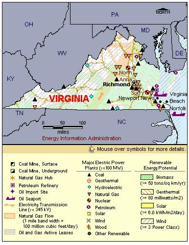

State Overview
There are two operating nuclear power plants in Virginia:
North Anna in Louisa County
- In November 2007, Dominion filed a combined license application with the U.S. Nuclear Regulatory Commission (NRC) to build a third reactor at North Anna. More information on this application is available in the Status of Potential New Commercial Reactors in the United States.
- The pair of three-loop pressurized water reactors (PWR) at North Anna were designed by the Virginia Electric Power Company and built with the assistance of Stone & Webster Engineering Corporation.
- Each reactor had a designed thermal capacity of 2,775 megawatts. Both were uprated (increased in capacity) to 2,893 megawatts (thermal) in 1986.
Surry in Surry County
- On March 3, 2003, the Nuclear Regulatory Commission approved a license extension application that covered both the Surry Plant and Virginia's other nuclear plant at North Anna.
Contribution of Nuclear Power
Nuclear capacity represents nearly 15% of Virginia’s total electric generating capacity.
Nuclear generation accounts for almost a third of Virginia’s total generation.
Virginia was a net importer of electricity, importing 35% of its electric power use.
License Renewals
North Anna: In March 2003, North Anna received approval for a 20-year license extension. Unit 1’s license will now expire in April 2038. Unit 2’s license will expire in August 2040.
Surry: In March 2003, Surry received approval for a 20-year license extension. Unit 1’s license will now expire May 2032. Unit 2’s license will expire in January 2033.
New Applications
- North Anna: On November 27, 2007, the NRC approved an Early Site Permit for possible expansion of Dominion’s North Anna site.
- North Anna: In November 2007, Dominion submitted a Combined License (COL) application for an additional unit at the North Anna site. The application is for an Economic Simplified Boiling Water Reactor (ESBWR).

|
| Virginia Total Electric Power Industry, Summer Capacity and Net Generation, by Energy Source, 2008 |
| Primary Energy Source |
Summer Capacity
(MW) |
Share of State Total
(Percent) |
Net Generation
(Thousand MWh) |
Share of State Total
(Percent) |
| Nuclear |
3,404 |
14.5 |
27,931 |
38.4 |
| Coal |
5,773 |
24.6 |
31,776 |
43.7 |
| Hydro and Pumped Storage |
3,838 |
16.3 |
-627 |
-0.9 |
| Natural Gas |
7,351 |
31.3 |
9,315 |
12.8 |
| Other1 |
- |
- |
434 |
0.6 |
| Other Renewable1 |
691 |
2.9 |
2,698 |
3.7 |
| Petroleum |
2,418 |
10.3 |
1,150 |
1.6 |
| Total |
23,476 |
100.0 |
72,679 |
100.0 |
| Virginia Nuclear Power Plants, Summer Capacity and Net Generation, 2008 |
| Plant Name/Total Reactors |
Summer Capacity
(MW) |
Net Generation
(Thousand MWh) |
Share of State Nuclear
Net Generation
(Percent) |
Owner |
North Anna
Unit 1, Unit 2 |
1,806 |
14,433 |
51.7 |
Virginia Electric & Power Co |
Surry
Unit 1, Unit 2 |
1,598 |
13,497 |
48.3 |
Virginia Electric & Power Co |
2 Plants
4 Reactors |
3,404 |
27,931 |
100.0 |
|
|
Plant Profiles
North Anna Power Station
| North Anna |
| Unit |
Summer Capacity
(MW) |
Net Generation
(Thousand MWh) |
Summer Capacity Factor
(Percent) |
Type |
Commercial Operation Date |
License Expiration Date |
| 1 |
903 |
7,987 |
101.0 |
PWR |
6/6/1978 |
4/1/2038 |
| 2 |
903 |
6,447 |
81.5 |
PWR |
12/14/1980 |
8/21/2040 |
| |
1,806 |
14,433 |
91.2 |
|
|
|
Operator: Virginia Electric Power Company
Location and Service Territory: The North Anna nuclear power station is on a 1,075-acre site on a peninsula near Mineral, a small town in Louisa County, Virginia.
Construction Cost: $3.861 billion (2007 USD)
Reactor Descriptions: Both of the units are Westinghouse, three-loop, pressurized water reactors.
Cooling System: To supply cooling water for the plant, a dam was erected in 1971 on the North Anna River to create Lake Anna. The water is drawn from Lake Anna in a once-through cooling system.
Surry Nuclear Generating Station
| Surry |
| Unit |
Summer Capacity
(MW) |
Net Generation
(Thousand MWh) |
Summer Capacity Factor
(Percent) |
Type |
Commercial Operation Date |
License Expiration Date |
| 1 |
799 |
6,891 |
98.4 |
PWR |
12/22/1972 |
5/25/2032 |
| 2 |
799 |
6,607 |
94.4 |
PWR |
5/1/1973 |
1/29/2033 |
| |
1,598 |
13,497 |
96.4 |
|
|
|
Operator: Virginia Electric Power Company
Location and Service Territory: The Surry plant, named for the county in which it is located, is on an 840 acre site, Gravel Neck Peninsula, 7 miles south of historic Williamsburg, Virginia. Upstream of the peninsula is tidal river and downstream is an estuary. At the tip of the estuary is a wildlife refuge.
Construction Cost: $1.868 billion (2007 USD)
Reactor Descriptions: The reactors are Westinghouse three-loop pressurized water reactors, each holding 157 fuel assemblies.
Cooling System: Cooling water for the once-through cooling system is drawn through a channel dredged in the bottom of the James River.
see also:
more annual nuclear statistics
projected electricity capacity to 2035
international
electricity statistics |
|